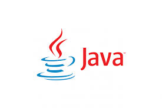

Programming language

Python was invented by Guido van Rossum.Began working on Python in the late 1980s.
Released the first version, Python 0.9.1, in February 1991.
Initially called "Molder" but later renamed to Python.

- Java is a high-level, object-oriented programming language developed by Sun Microsystems.
- Created by James Gosling, Mike Sheridan, and Patrick Naughton in 1991.
- First public release in 1995.
- java is a widely used programming language for coding web application.
World Wide Web (WWW) became publicly available in 1993.Invented by Tim Berners-Lee in 1989
First website launched on August 6, 1991.